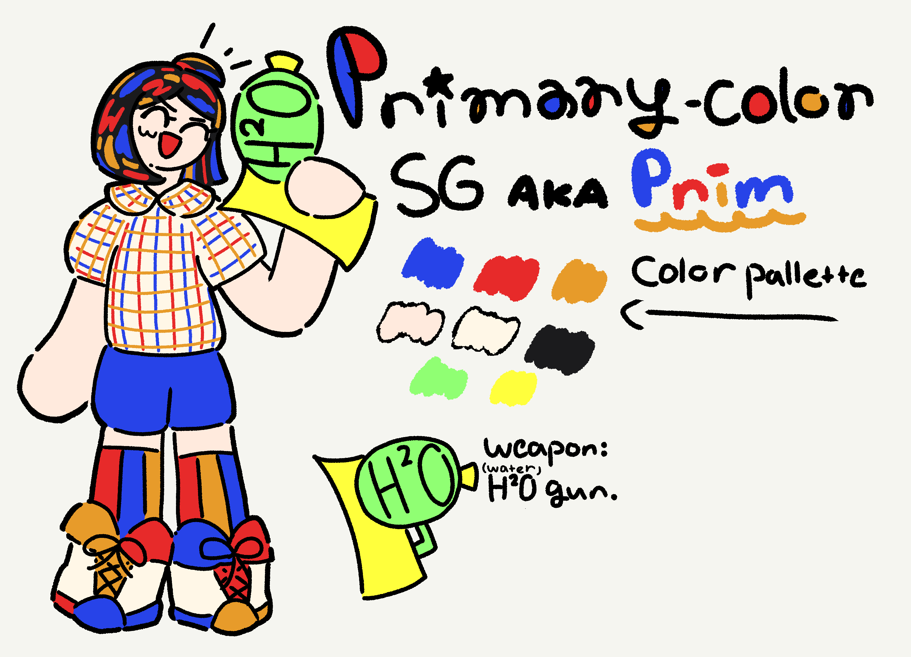
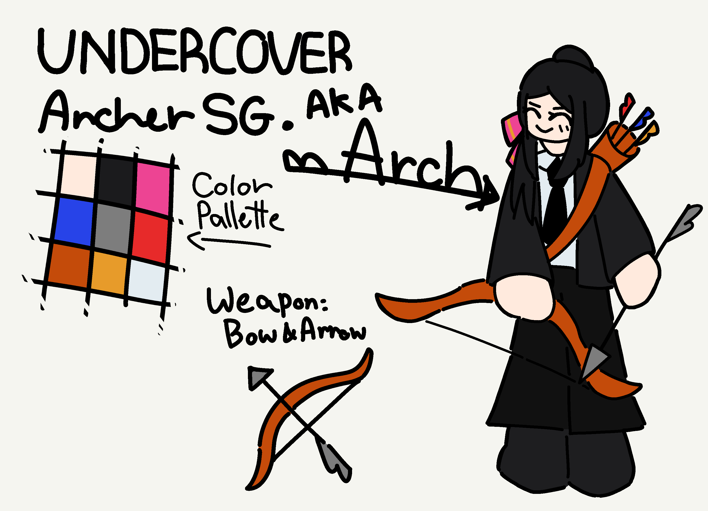

The Adorable Duo are two SGs that represent the surface impression of Sweettooth.
The best way to describe them is "right brain and left brain".
They're essentially the Protagonists of MSG
and one of the first SGs Sweettooth ever made.
Prim is the 'creative'
and 'energetic' SG.
She has a curiosity of a cat and the survival instinct of a toast.
Arch is the 'logical'
and 'strategic' SG.
Organizes thoughts and ideas to excute yet having an accuracy
of a bottle flip.
Her entire life is just try and error.